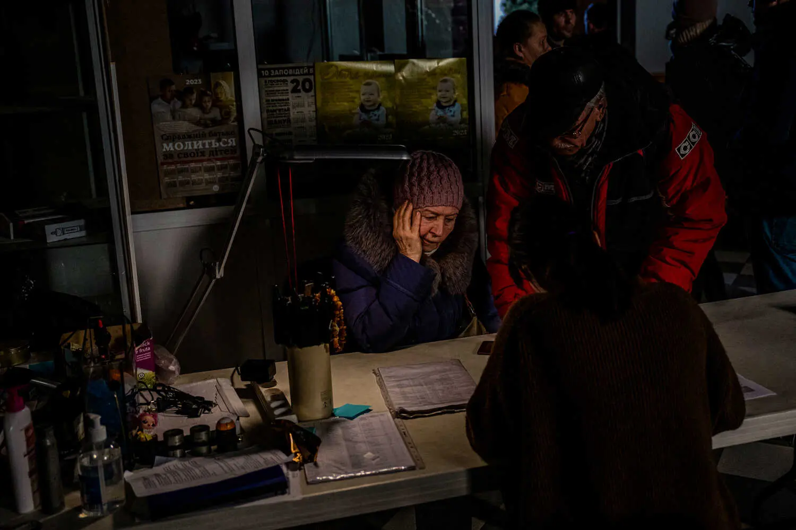

U.S.
INTERNACIONAL
CANADA
ESPAÑOL
中文
Tuesday, January 24, 2023
Today's Paper
34°F
37° 33°
Dow +0.31%↑
World
U.S.
Politics
N.Y.
Business
Opinion
Science
Health
Sports
Arts
Books
Style
Food
Travel
Magazine
Real Estate
Cooking
The Athletic
Wirecutter
Games
LIVE
California Shootings
Russia-Ukraine War
6m ago
Latest Photos From Ukraine
